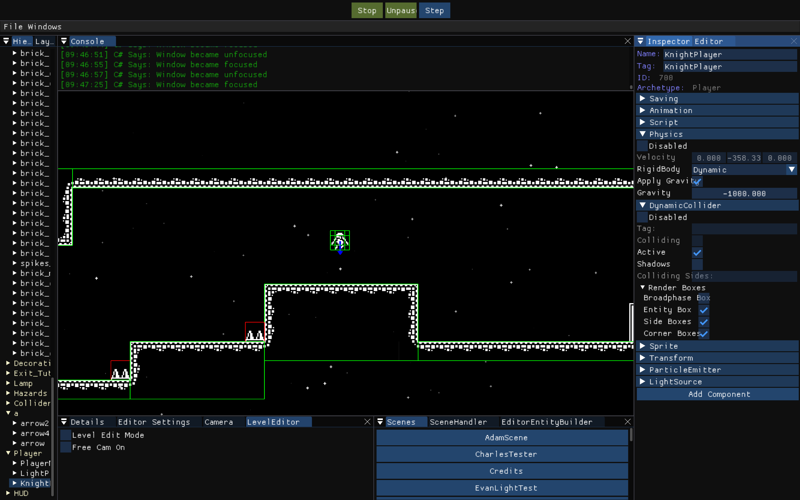
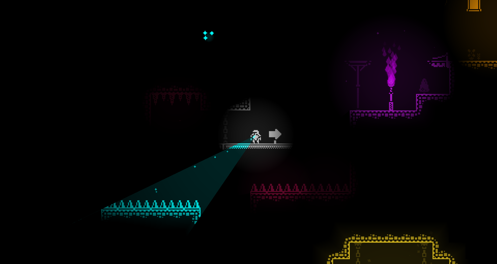

KnightLight
Physics Programmer — DigiPen Institute of Technology — 8 Months
Overview
KnightLight is a tile-based 2D puzzle-platformer where players navigate a dark environment by illuminating their surroundings. It was developed over eight months as part of the GAM 200–250 course sequence at DigiPen Institute of Technology which is a multi-semester, team-based production course built around shipping a complete game on a custom C++ engine.
I served as the primary physics programmer on a seven person team (five programmers, two designers). My work covered collision detection and resolution, player movement, the transformation hierarchy, and a range of production tasks including the game trailer and Steam storefront assets. KnightLight shipped publicly on Steam at the end of the second semester.
Project Context
The engine used a component-based architecture where entities were composed of modular components and instantiated through factory functions driven by JSON configuration files. Levels were authored by designers in Tiled and imported directly into the engine, allowing the programming and design teams to iterate independently. Dear ImGui was integrated as a real-time debugging and visualization layer throughout production.

My Contributions
Physics & Collision System
I designed and implemented the core physics system, including AABB and circle collision detection and resolution, and the player movement system. I initially prototyped collision using the Separating Axis Theorem, but found it unnecessarily complex and unstable for the project's scope as the edge cases caused frequent tunneling and unpredictable resolution. I transitioned to a swept AABB approach, predicting the player's future bounding box from velocity and delta time and resolving collisions at the exact time of impact rather than after overlap. This eliminated tunneling and fixed incorrect push-out directions during high-speed movement.
To improve platforming feel, I decomposed the player's collision volume into eight sub-AABBs and added velocity-aware corner correction logic. This allowed edge cases such as barely clearing a ledge to be handled forgivingly without sacrificing physical consistency.

Collision Filtering & Event Dispatch
I implemented tag-based collision filtering and response logic, enabling distinct behaviors per object type. When a collision was detected, the physics system used the object's tag to immediately dispatch the appropriate gameplay response: spikes triggering damage, interactables invoking scripted behavior, terrain resolving positional constraints. This decoupled gameplay logic from low-level collision detection and avoided large conditional chains.
Transform Hierarchy
I implemented the engine's parent–child transformation system. An initial approach stored child transforms directly inside the parent component, which introduced memory overhead and tightly coupled ownership. I refactored the system so parent transforms maintain a list of child entity IDs; during each update cycle, child transforms are resolved through indexed lookups and updated relative to the parent. This reduced memory duplication and kept hierarchical updates clean and scalable.
Player Behavior Prototype
I created the initial prototype of the player behavior system, designed for extensibility so future developers could iterate on and scale movement mechanics as gameplay requirements evolved.
Additional Production Work
Beyond engine and gameplay systems, I implemented portions of the C#-based startup and loading screen, produced the official game trailer, sourced licensed music and sound effects, and compiled licensing documentation for all third-party libraries used in the engine.
Key Technical Challenges
1. SAT vs. AABB | Recognizing Overengineering
Early in the first semester I attempted to use SAT for what was ultimately a simple AABB collision problem. The approach introduced instability, particularly against line-based floor geometry and added significant complexity for features (like slanted floors) that were ultimately deprioritized. Switching to a focused AABB solution resolved the instability almost immediately and became the foundation for all subsequent collision work.
2. Corner Collision & Platforming Feel
Handling platform corners fairly required strict case-by-case logic driven by the player's velocity vector and contact normal, which became difficult to generalize. After multiple iterations I reduced the logic to four primary conditionals covering the key movement directions. The result isn't the most elegant code, but it achieves consistent behavior and makes edge-case jumps feel intentional rather than punishing.
3. Parent–Child Transform Refactor
The initial transform hierarchy stored children directly inside parent components functionally correct, but wasteful and tightly coupled. Refactoring to ID-based child references resolved the ownership issues and scaled cleanly with the rest of the component architecture.
4. Physics Update Ordering
The physics step was executing too late in the frame pipeline, causing subtle discrepancies between expected and observed object behavior. Diagnosing this required step-through debugging and live inspection of intermediate values in Visual Studio. Fixing the update order eliminated the artifacts and reinforced how much deterministic pipeline ordering matters in real-time simulation.
Results & Release
KnightLight shipped publicly on Steam, completing an eight-month academic production cycle. The final build delivered stable, responsive platforming that met the team's original design goals within the constraints of a custom engine. I supported the release by producing the trailer and capturing screenshots for the Steam storefront.

What I Learned
KnightLight gave me a deep, practical foundation in physics programming and the tradeoffs that come with algorithm selection. It was also my first experience on an interdisciplinary team — working closely with designers taught me how to translate gameplay intent into technical systems and how to build tools that support their workflows rather than just my own.
On the technical side, I sharpened my debugging skills significantly, including diagnosing a memory corruption
issue caused by modifying a std::vector during iteration. Resolving it required restructuring the
data model and choosing a container better suited to the access patterns — a concrete lesson in matching data
structures to their use case. More broadly, the project gave me a much clearer mental model of how engine
subsystems — transforms, physics, rendering, gameplay logic — need to remain decoupled yet synchronized to
scale into a cohesive runtime.